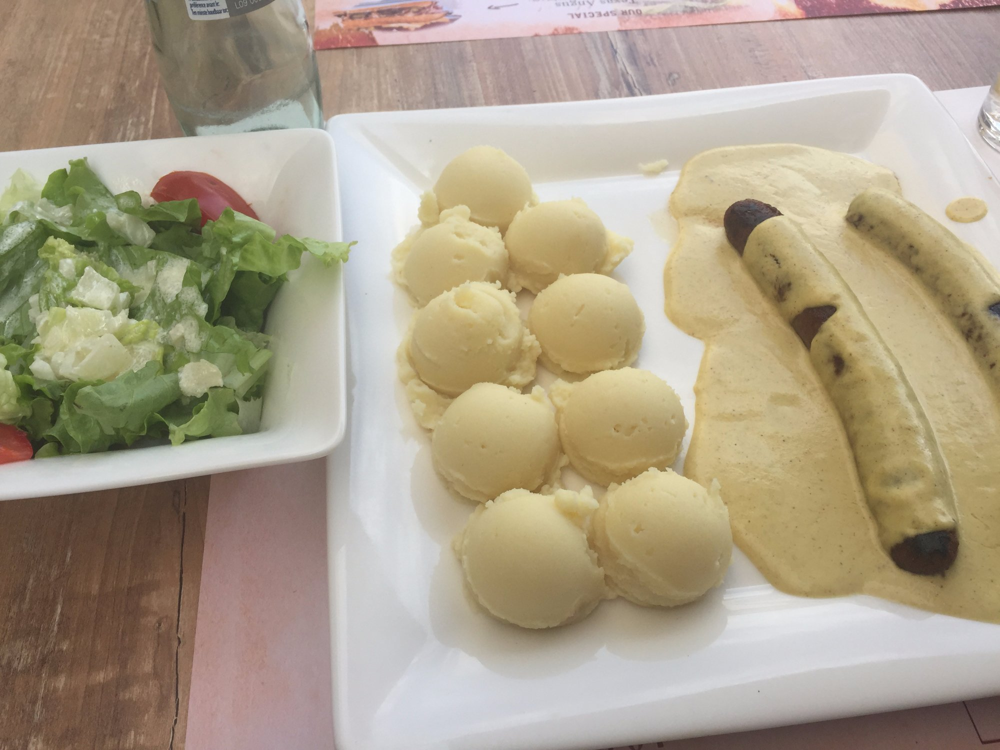
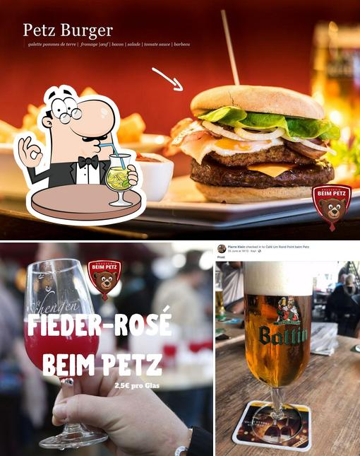
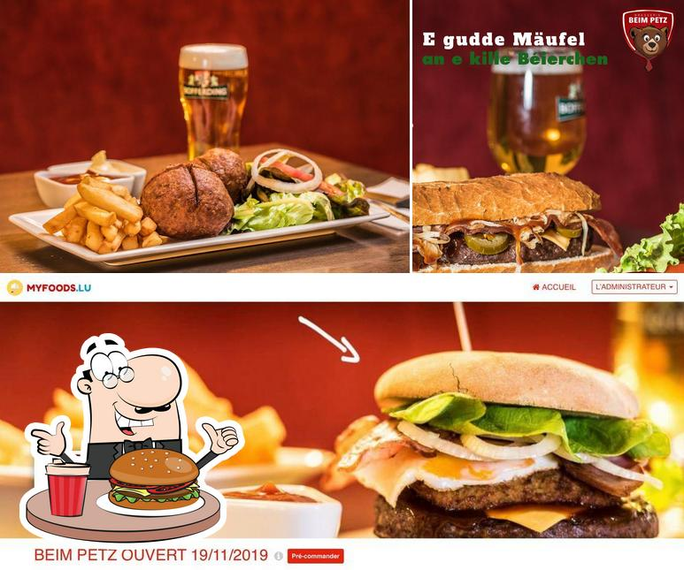
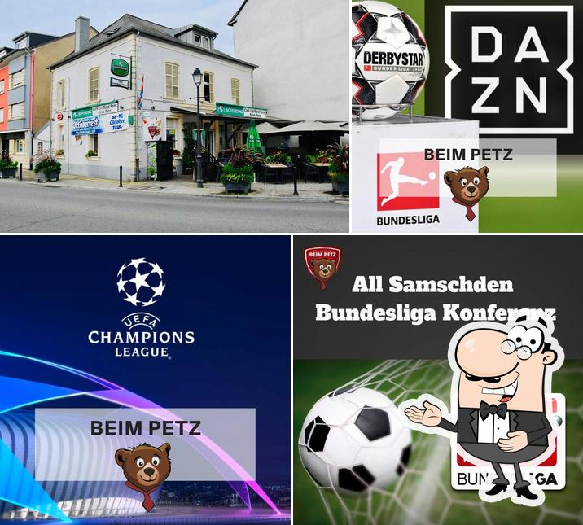
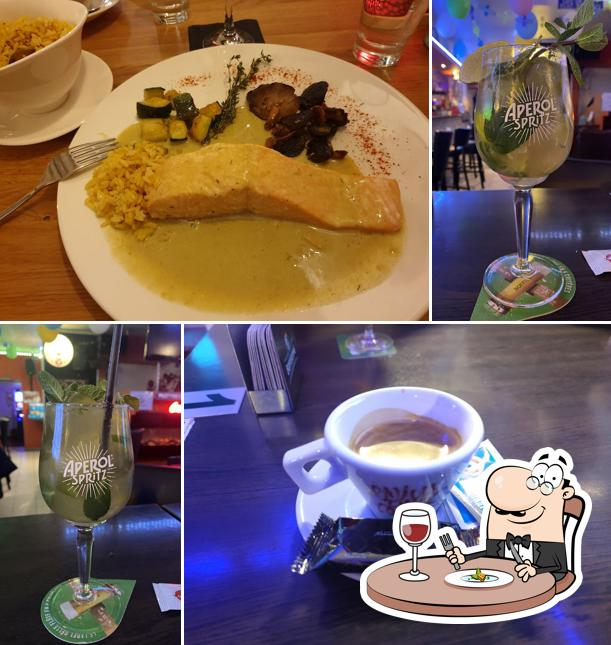
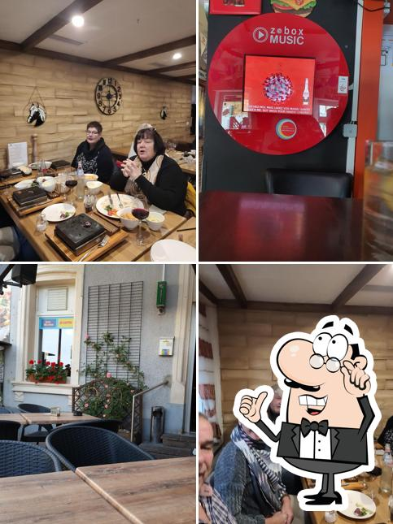

Sortie 01
Burgers maison
La signature du café — réputée pour les meilleurs burgers du coin. Pain, viande et frites maison.
Spécialité de la maisonLe café du coin où tout Kayl tourne — burgers, friture et bonne ambiance.
Slogan proposé — à valider avec l'établissement
Ici la journée fait le tour : on entre pour un café, on revient pour le burger, on reste pour le karaoké. Un seul point de passage, du matin jusque tard.

Comptoir ouvert tôt : le premier café des habitués et des travailleurs du coin.

Les fameux burgers, l'Angus et la friture — la pause de midi de Kayl-Tétange.

Bière fraîche, ambiance de quartier et la salle qui se remplit doucement.

Dessert maison, dernier verre et les soirées karaoké jusqu'à tard.
Prenez la sortie qui vous fait envie. Une carte café-brasserie et friture, généreuse et sans façon.
« Um Rond Point » : le café installé au rond-point de Kayl-Tétange, celui devant lequel tout le monde passe. On y prend son café le matin, son burger à midi, son verre le soir. Un vrai café de village.
Côté friterie, « beim Petz » régale le quartier depuis le comptoir : burgers maison, friture, plats brasserie et snacks portugais. Salle chaleureuse en bois, terrasse aux géraniums, accueil sympathique.
Superbe endroit avec superbe ambiance, surtout les soirs de karaoké.
— Avis client, Kayl
42 Grand-Rue, au rond-point de Kayl-Tétange. Un café, une table ou juste une frite en passant — la porte est ouverte.